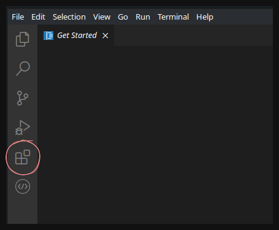
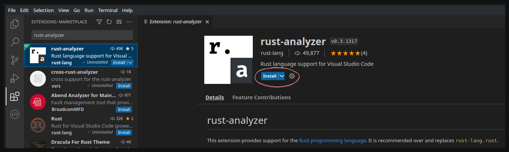
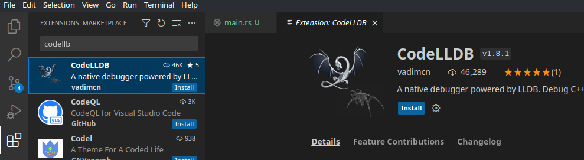
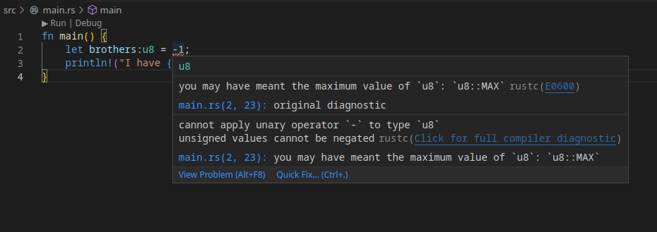
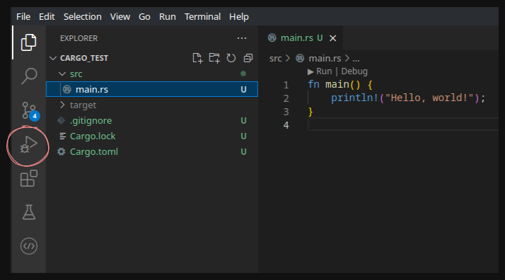
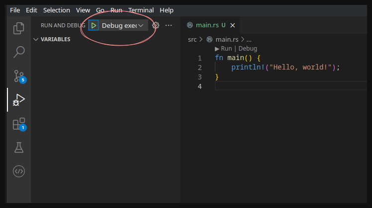
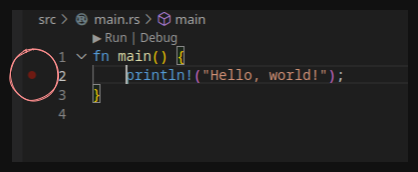
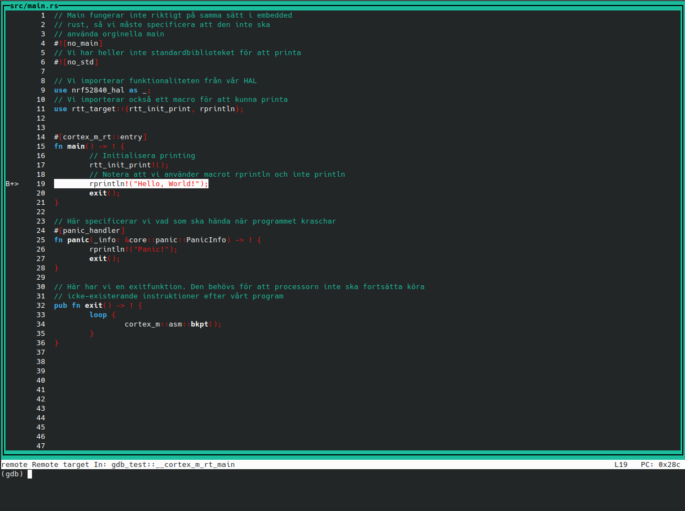

Rust för inbyggda system - En introduktion
Vad är Rust?
Rust is a modern systems programming language developed by the Mozilla Corporation. It is intended to be a language for highly concurrent and highly secure systems. It compiles to native code; hence, it is blazingly fast like C and C++.
Vad är då fördelen med Rust?
Systems and application programming languages face two major problems It is difficult to write secure code (and) it is difficult to write multi-threaded code.
Iden med Rust är att ha ett programmeringsspråk som prioriterar att utveckla snabba, hårdvarunära program. Detta görs med concurrency, dvs att programmet består av olika delar som kan köras samtidigt.
Rustup
Rustup är ett terminalbaserat verktyg för att hantera versioner av rustkompilatorn och de verktyg som krävs för att kompilera rustkod.
När rustup installeras kommer också en kompilator för rust att hänga med, kallad rustc.
Rustup installation - Manjaro
sudo pacman -S rustup
Introduktion till rust
Här kommer en introduktion till rust. Om du känner att du har koll kan du skippa den. Annars om du känner dig relativt säker men vill ha en genomgång om ägandeskap kan du kolla Exempel 8 - Ägandeskap och Exempel 9 - Lånande.
Exempel 1 - Hello World
Vi börjar med ett enkelt exempel. Vi ska skriva ett hello world program i rust och kompilerar det för att köras på din dator.
Börja med att skapa en mapp som heter exempel1-helloWorld
mkdir exempel1-helloWorld
cd exempel1-helloWorld
Där i vill vi skapa sourcefilen för hello world programmet
touch helloWorld.rs
Notera att filändelsen för rust är .rs
Senare går vi igenom hur man använder en IDE för att skriva, kompilera och köra rustkod i. Men för enkelhetens skull börjar vi med att använda en textredigerare för att skriva koden i och en terminal för att kompilera och köra i.
Öppna denna fil i en textredigerare. Jag rekommenderar Sublime Text för enkelhetens skull. Där lägger du till.
fn main()
{
println!("Hello world!");
}
Här har vi några nyckelord.
fn är en definition för att skapa en funktion, och
fn main() är då den funktionen som kommer att köras när ett kompilerat rustprogram startar.
println! är ett macro för att printa text. Ett macro är egentligen ett namn för en bit kod som är definierad på något annat ställe. Vi som programmerare behöver inte veta exakt hur ett program ska bära sig åt för att printa text på en terminal, utan vi vill bara kunna göra det. Därför använder vi ett macro för att printa text, som sedan ersätts med den bit kod som är nödvändig just för att printa under kompileringsprocessen.
Det viktiga du behöver veta är att ett macro alltid markeras i rust med ett utropstecken, därför är det println! och inte println.
Kompilera programmet
För att kompilera programmet använder vi en kompilator som hänger med i [[#Rustup|rustup]], kallad rustc. I exempel1-helloWorld där sourcefilen helloWorld.rs ligger vill du vara. Där kallar du på rustc och skickar in sourcefilen som ska kompileras.
rustc helloWorld.rs
Detta kommer genera en fil med samma namn, fast utan filändelsen .rs. Detta är vårt program.
Testa att köra programmet i terminalen
./helloWorld
Skriver den ut Hello world!? Isåfall funkade allt, och din kod kompilerades.
Exempel 2 - Printa med argument
När man testar saker i vilket programmeringsspråk som helst, kan det vara bra att kunna printa vad en variabel innehåller. I rust kan vi, istället för att själv göra en sträng och sätta i variabeln i den, printa med argument.
Det betyder egentligen att vi skriver i en sträng vart ett argument ska skrivas ut. Detta görs i rust med {}.
Vi gör ett exempelprogram där vi sparar antalet bröder du har i en variabel, och sedan printar denna variabel.
Gör en ny mapp med namnet example2-printaMedArgument och i den, skapa en sourcefil med namnet howManyBrothers.rs.
mkdir example2-howManyBrothers
cd example2-howManyBrothers
touch howManyBrothers.rs
I denna nya fil kan du skriva följande
fn main()
{
println!("I have {} brothers.", 3);
}
Sedan kompilera och kör programmet på samma sätt som i exempel 1
rustc howManyBrothers.rs
./howManyBrothers
Det som händer nu är att rust ser att du har ett argument, 3 i mitt fall, och att du har {} i strängen som ska printas. Rust tar därför argumentet och sätter in det där det står {}, vilket resulterar i I have 3 brothers.
Exempel 3 - Variabler
Rust kan, på samma sätt som till exempel python, själv räkna ut vilken typ en variabel ska vara utifrån den data du skickar in i denna.
För att deklarera en variabel i rust använder du let.
Vi gör om det föregående exemplet, fast nu använder vi en variabel för att spara hur många bröder du har.
mkdir example3-howManyBrothersVar
cd example3-howManyBrothersVar
touch howManyBrothersVar.rs
Nu vill vi istället specificera en variabel där vi sparar hur många bröder du har och sedan använder den här variabeln i printsatsen.
fn main() {
let brothers = 3;
println!("I have {} brothers.", brothers);
}
Testa att kompilera och köra detta
rustc howManyBrothersVar.rs
./howManyBrothersVar
Vi kan dock säga explicit till rust att en variabel ska vara en specifik typ. Om vi till exempel vet att vi behöver inte ha ett negativt antal bröder, och vi kommer aldrig ha mer än 255 bröder. Isåfall kan vi spara antalet bröder i en unsigned (positiv) 8-bitars heltal; en u8.
I rust specificerar vi detta igenom att skriva ett kolon efter variabelnamnet och sedan vilken typ den ska vara (innan lika med tecknet).
Testa att lägga till detta
fn main() {
let brothers:u8 = 3;
println!("I have {} brothers.", brothers);
}
Kompilerar du och kör detta, kommer du få samma resultat som förut. Skulle du nu dock välja att ha ett negativt antal bröder, kommer rust inte att låta dig kompilera då vi explicit sagt att denna variabel ska vara ett positivt 8-bitars tal.
Testa att byta antalet bröder till -1 och kompilera.
fn main() {
let brothers:u8 = -1;
println!("I have {} brothers.", brothers);
}
Detta resulterar i följande error
| let brothers:u8 = -1;
| ^^
| |
| cannot apply unary operator `-`
Alltså, operatorn - funkar inte på ett positivt heltal. Vill du läsa mer om olika typer rekommenderar jag Tutorialspoint: Rust - Data Types.
Exempel 4 - Ändra variabler
I de flesta programmeringsspråk har du variabler som man kan ändra värde på, och variabler som du specificerat ska vara konstanta (dvs att dessa inte ska ändras efter att de skapats).
Detta är dock inte fallet i rust. Här måste du istället specificera att en variabel ska gå att ändra på.
Vi testar med ett nytt exempel
mkdir example4-howManyBrothersUpdate
cd example4-howManyBrothersUpdate
touch howManyBrothersUpdate.rs
Säg att du har ett program där du sparar hur många bröder du har och sedan printar ut detta antal. Men precis mellan det ögonblick programmet sparar antalet bröder och ska printa ut det, får du en ny bror (något av ett edge case men ändå). Du vill därför ändra antalet bröder du har efter att du skapat variabeln.
fn main()
{
let brothers = 3;
println!("I have {} brothers.", brothers);
brothers = 4;
println!("I now have {} brothers.", brothers);
}
Försöker du kompilera detta får du följande error
| brothers = 4;
| ^^^^^^^^^^^^ cannot assign twice to immutable variable
Det den säger är i princip att du försöker skriva över en immutable (konstant) variabel.
Det man behöver göra i rust för att en variabel ska få ändras, är att specificera att den ska vara mutable (muterbar/möjlig att ändra). Detta gör du med nyckelordet mut.
Testa att lägga till mut framför deklarationen av variabeln (mellan let och variabelnamnet)
fn main()
{
let mut brothers = 3;
println!("I have {} brothers.", brothers);
brothers = 4;
println!("I now have {} brothers.", brothers);
}
Nu lyckas programmet kompileras och köras.
Variabler kan även deklareras som konstanta i rust, vilket ger dem en del mer restriktioner. Är du mer intresserad av det kan du läsa Tutorialspoint: Rust - Constants.
Exempel 5 - Strängar
Rust gör en distinkt skillnad mellan två sorters strängar; litterala strängar och strängobjekt.
En litteral sträng är en sträng som definieras under kompileringen och sedan används av programmet, men den ändras aldrig. Exempelvis om du har en meny i ditt program, där alla alternativ skrivs ut i en terminal. Programmet kommer aldrig att själv ändra sin meny, och därför kan denna sträng vara statisk.
Notera att detta inte betyder att du inte kan spara strängen i en variabel. Det kan du göra med följande typ.
fn main() {
let name:&str = "Josef";
}
Ett strängobjekt är en sträng som programmet själv kommer att ändra på. För att få en sån behöver du skapa strängobjektet med funktionen new().
fn main() {
let mut buffer = String::new();
}
För att ändra strängen sedan finns en massa funktioner (kolla in Tutorialspoint: Rust - String). I exempel kan vi använda funktionen push_str(), för att fylla på strängobjektet med en litteral sträng (alltså en vi vet vad den innehåller under kompileringen)
fn main() {
let mut buffer = String::new();
buffer.push_str("Hello");
}
Exempel 6 - If-satser, loopar och sånt
Vi går snabbt igenom lite om if-satser, loopar och liknande.
I rust behöver du inte ha parenteser runt if, for och while satser (på samma sätt som i python)
// En if-sats utan paranteser
if i == 2 {
// Do stuff
}
For loopar i rust ser också lite annorlunda ut. Du behöver inte deklarera en variabel som du sedan använder för att loopa över. Rust kan lista ut det själv.
För att loopa från ett värde till ett annat använder du det som heter in och definierar en range som ska loopas över. Här loopar vi från 0 till, men inte med, 10
for j in 0..10 {
// Do stuff
}
Vill du läsa på mer, kan du se över Tutorialspoint: Rust - Loop
Exempel 7 - Funktioner
Funktioner i rust deklareras med nyckelordet fn. Man kan specificera vad funktionen retunerar med -> type.
fn function_name(var1, var2) -> return_type {
// Stuff
return value;
}
Man kan också retunera ett värde i en funktion igenom att avsluta en funktion utan semikolon på slutet
fn function_name(var1, var2) -> return_type {
// The same thing as return value;
value
}
Variabler för indata till funktionen kan man också specificera vilka typer det ska vara, på samma sätt som när man deklarerar en variabel
fn function_name(var1:u8, var2:&str) {
// Stuff
}
Förutom explicita värden kan referenser till variabler skickas in i funktioner (som pekare i C)
fn main()
{
let mut no:i32 = 5;
mutate_no_to_zero(&mut no);
println!("The value of no is:{}",no);
}
fn mutate_no_to_zero(param_no:&mut i32)
{
*param_no = 0; //de reference
}
Exempel 8 - Ägandeskap
En del som är mer omständligt i rust jämfört med till exempel C eller python, är att en variabel kan endast ägas av en funktion.
Här måste vi dock göra en distinkt skillnad mellan variabler som är av en primitiv typ eller en som inte är det.
En variabel av en primitiv typ är en enkel variabel som är inbyggd i rust (typ). Detta inkluderar till exempel u8, i8, f8, bool och char.
Men när en variabel är mer komplicerad, någonting som kanske kan vara olika storlekar eller en typ som du som användare skapad (en klass till exempel), är detta inte en primitiv typ.
I C++ kan du till exempel ha en funktion som tar in en referens till en variabel. Här använder vi en vektor då det inte är en primitiv typ. Funktionen kan ändra på datan i vektorn, som då också ändras för datan där funktionen kallades
// Funktion som tar in en referens för en vektor
void bar(vector<int>& vect)
{
// Referera till variabeln ändra något i den
vec.push_back(3);
}
void foo()
{
// Skapa en vektor och sätt två av värdena i den
vector<int> vect;
vect.push_back(1);
vect.push_back(2);
// Kalla på bar med vektorn
bar(vec);
// Vi kan nu fortfarande använda vektorn,
// men storleken har ändrats efter att bar
// har kallats
cout << vec.size() << endl;
}
I rust däremot gäller följande - En variabel får bara ägas av en funktion i taget - Två variabler får inte peka på samma minnesadress
Det här påverkar mest icke-primitiva typer. Lite senare går vi igenom hur det funkar för primitiva typer.
Det betyder i princip att samma kod i rust inte hade fungerat. Det är för att efter att funktionen bar kallas på med variabeln som indata, konsumeras denna variabel av funktionen och kan inte längre användas.
// Funktion som tar in en vektor och ändrar på den
fn bar(mut vec:Vec<u8>)
{
vec.push(3);
}
fn main()
{
// Skapa en vektor
let mut vec:Vec<u8> = Vec::new();
vec.push(1);
vec.push(2);
// Kalla på bar med vektorn som indata
bar(vec);
// Detta fungerar inte, då vec har konsumerats
// av funktionen bar
println!("Size: {}", vec.len());
}
Försöker vi kompilera det här får vi ett error som säger att variabeln vec har flyttats (och inte kunnat kopieras) och inte längre ägs av mainfunktionen. Därför kan den inte användas längre
| let mut vec:Vec<u8> = Vec::new();
| ------- move occurs because `vec` has type `Vec<u8>`, which does not implement the `Copy` trait
...
| bar(vec);
| --- value moved here
...
| println!("Size: {}", vec.len());
| ^^^^^^^^^ value borrowed here after move
Det betyder också att om vi försöker att skapa en variabel och kopierar den, får vi inte längre använda den gamla variabeln
fn main()
{
// Skapa en vektor
let mut vec:Vec<u8> = Vec::new();
vec.push(1);
vec.push(2);
// Det här är okej. Ägandeskapet till vec ligger
// nu i vec2
let vec2 = vec;
// Det här går dock inte, då vec inte längre
// finns utan har konsumerats
println!("Size: {}", vec.len());
}
Anledningen till detta handlar om hur värden sparas när programmet körs. Det finns beskrivet bra i Tutorialspoint: Rust - Ownership.
Undantaget till detta är dock om man använder primitiva typer. Det är för att rust vet hur dessa ska kopieras på ett bra sätt. Hade föregående exempel istället varit för variabler av typen u8, räknar rust ut att det den ska göra är att kopiera innehållet i variabeln.
fn main()
{
// Skapa en primitiv variabel
let u1 = 1;
// Sätt värdet på en annan variabel till den
// första variabeln. Detta resulterar i att
// värdet i den första variabeln sätts på
// den andra
let u2 = u1;
// Därför fungerar detta, då u2 inte är samma
// variabel som u1, utan bara har samma värde
println!("u1: {}", u1);
}
Exempel 9 - Lånande
Man skulle kunna komma runt föregående exempel igenom att efter att funktionen körts, retunera variabeln och spara den i en ny variabel.
// Funktion som tar in en vektor, ändrar på den och
// sedan retunerar den
fn bar(mut vec:Vec<u8>) -> Vec<u8>
{
vec.push(3);
return vec;
}
fn main()
{
// Skapa en vektor
let mut vec:Vec<u8> = Vec::new();
vec.push(1);
vec.push(2);
// Kalla på bar med vektorn som indata, och skapa
// en ny variabel med vektorn som funktionen
// retunerar
let vec2 = bar(vec);
// Detta fungerar då vec2 typ är en ny vektor
println!("Size: {}", vec2.len());
}
Det blir dock lätt omständligt. Därför kan en funktion även låna en variabel. Den får en lånad variabel som indata, där den kan ändra på saker. Men när funktionen körts klart lämnas variabeln tillbaks.
Detta görs i rust igenom att referera till variabeln med ett &
// Funktion som lånar en vektor. Notera & innan variabeltypen
fn bar(vec:&Vec<u8>)
{
println!("Size from a function: {}", vec.len());
}
fn main()
{
// Skapa en vektor
let mut vec:Vec<u8> = Vec::new();
vec.push(1);
vec.push(2);
// Skicka in en referens till vec, vilket låter bar låna den
bar(&vec);
// Vi har fortfarande kvar vec och kan använda den
println!("Size: {}", vec.len());
}
Notera dock att vi inte kan ändra på variabeln i det här fallet, utan endast använda den. För att variabeln ska kunna ändras måste vi specificera att den ska vara muterbar både i funktionsdeklarationen och i funktionskallet. Detta görs med nyckelordet &mut
// Funktion som lånar en vektor och har rätt att ändra på den.
// Notera &mut innan variabeltypen
fn bar(vec:&mut Vec<u8>)
{
// Ändrar inehållet i vec. Utdatan sparas i en
// skräpvariabel, då rust annars genererar en
// varning angående utdata från lånade variabler
let _ = &vec.push(3);
println!("Size from a function: {}", vec.len());
}
fn main()
{
// Skapa en vektor
let mut vec:Vec<u8> = Vec::new();
vec.push(1);
vec.push(2);
// Skicka in en referens till vec, vilket låter bar låna den
// och ändra på den. Notera att vi explicit specificerar att
// variabeln ska vara en muterbar referens
bar(&mut vec);
// Vi har fortfarande kvar vec och kan använda den. Nu har den
// dock ändrats av funktionen
println!("Size: {}", vec.len());
}
Cargo
I rust har vi det som kallas crates, vilket är som bibliotek i C. Det som dock är smidigt mer rust är att installationen och versionshantering av crates sköts av pakethanterare: Cargo.
Cargo är ganska likt pip om du använt det. Skillnaden är att cargo också löser virtuella miljöer (typ) och byggandet av projekt själv. Cargo hänger också med i rustup, vilket är smidigt.
Rustup vs Cargo
Här ser du vad som är skillnaden mellan rustup och cargo

Här är en till guide som också går igenom hur man kommer igång med rust Meduim: Rust - A Beginner Cheat Sheet
För mer information om crates kan du kolla in Tutorialspoint: Rust - Modules
Skapa ett projekt
När du vill skapa ett projekt i rust använder du cargo. Du kan testa igenom att köra följande, som kommer att skapa mappen cargo_test
cargo new cargo_test
Det cargo gör är att den sätter upp en mappstruktur för dig och skapar de filer som krävs för att börja. Så här ser mappen ut när du skapar den
├── Cargo.toml
└── src
└── main.rs
Du får en src mapp där all din kod ska ligga och i den ligger main.rs, vilket är den fil programmet kommer leta efter funktionen main i.
I main.rs finns redan ett hello world exempel, så vi ska testa att bygga det. Det fina med att ha skapat projektet på det här sättet med cargo är att vi kan använda cargo för att bygga projektet. Om du är i mappen cargo_test kan du bara köra cargo build för att kompilera programmet och cargo run för att köra det.
cargo build
cargo run
Cargo bygger då programmet och kör det, vilket printar ut Hello, world! på terminalen.
Efter att du byggt programmet ser ditt projekt ut något såhär
├── Cargo.lock
├── Cargo.toml
├── src
│ └── main.rs
└── target
├── CACHEDIR.TAG
└── debug
├── build
├── cargo_test
├── cargo_test.d
├── deps
│ ├── cargo_test-99e382143f4d3aca
│ └── cargo_test-99e382143f4d3aca.d
├── examples
└── incremental
Det som är väsentligt här är filen target/debug/cargo_test. Det är ditt program! Du kan faktiskt köra den manuellt om du vill testa
./target/debug/cargo_test
Debug eller Release
Rust kan bygga ditt program på lite olika sätt. Som standard är att programmet byggs i debug, vilket betyder att kompilatorn lägger till en del saker för att göra felsökning lite enklare. Det är därför ditt program hamnar i mappen debug.
Om du en dag vill bygga en version av ditt program som ska användas kan du välja att bygga det i release läget. Rust kommer då att optimera och göra programmet mindre.
cargo build --release
cargo run --release
Cargo.toml och Cargo.lock
När du skapar ett nytt projekt genereras en fil som heter Cargo.toml. Sedan när du kompilerar projektet genereras en till fil som heter Cargo.lock.
Dessa filer beskriver vilka versioner av saker som projektet använder. Cargo.toml är den fil som du som programmerare skriver i. Där kan du specificera vad ditt program heter, vilken version den är på och vilka övriga crates ditt program behöver använda för att kunna köra.
Cargo.lock skapas sedan automatiskt när du bygger ditt projekt. Den specificerar exakt vilka versioner av olika crates som användes när du kompilerade ditt program. Den låser alltså versionerna. Detta gör att om en annan programmerare sedan bygger ditt projekt, kommer han få de exakta versionerna av de crates som du använde, vilket betyder att ditt program beter sig likadant för honom.
Du kan testa att lägga till en modul i din Cargo.toml fil. Under [dependencies] kan du lägga följande
[dependencies]
regex = { git = "https://github.com/rust-lang/regex.git" }
Kör du nu cargo build kommer den börja att ladda ner regex craten från github, och sedan bygga ditt projekt. Kollar du nu i Cargo.lock kommer du se att den har lagt till en massa saker som har med regex att göra. Det fina är att du aldrig behöver ändra i den filen själv, bara se till att pusha den om du laddar upp ditt projekt med git.
VS Code - Introduktion
Geeks for Geeks - How to Setup Rust in VSCode?
VS Code är en IDE skapad av Microsoft. Den är dock nu open-source. VS Code har bra support för att lägga till moduler, vilket låter en enkelt använda den för olika programmeringsspråk.
VS Code installation - Manjaro
sudo pacman -S vscode
För att sedan köra VS Code kör du programmet som heter code.
Rust plugin
I VS Code kan du installera pluginet rust-analyzer. Den kommer att analysera din kod, ge dig code completion och hitta varningar och errors.
Gå till Extentions i vänsterpanelen i VS Code.

Väl där kan du söka upp rust-analyzer och installera den

För att debugga kod kan du också installera CodeLLDB

Workspaces
I VS Code har du det som kallas workspaces. Det kan beskrivas som den mapp där din kod ligger. Testa att öppna testprojektet igenom att gå till File > Open Folder... och välja cargo_test mappen.
Nu ska mappen dyka upp på vänstersidan, med alla submappar och filer. Testa att öppna src/main.rs. Där har du din hello world kod, och allt är färgat korrekt vilket innebär att VS Code fattar att det ska vara rust kod.
Testa att skriva in ett av de icke-fungerande exemplen som finns under [[#Introduktion till rust]] och spara main.rs.
fn main() {
let brothers:u8 = -1;
println!("I have {} brothers.", brothers);
}
Nu kommer du få ett rött sträck under -1. Om du hovrar musen över sträcket får du en hjälpruta som beskriver varför din kod är fel.

Kompilera och debugga i VS Code
VS Code har en integrerad terminal i sig, vilken man kan använda för att manuellt bygga och köra ditt program. Går till Terminal > New Terminal för att få upp den. Det kommer öppna en terminal som befinner sig i workspace mappen. Testa att bygga och köra din kod i den.
cargo build
cargo run
Det är helt okej, men det smidiga med VS Code är att du manuellt kan specificera vad VS Code ska göra när du trycker på "Run and Debug".
Gå till menyn "Run and Debug"

Där kan du välja alternativet create a launch.json file
![](img/EmbeddedRust/Rust 2022-12-15 20.47.29.excalidraw}
Det kommer ge dig ett fönster där det står att du har en Cargo.toml fil i ditt projekt, och det frågar om du vill generera en fil från den. Välj Yes.
Den kommer generera en fil kallad .vscode/launch.json. Det är en fil som specificerar hur VS Code ska agera när du väljer att bygga ditt projekt.
Det autogenererade ska funka för vårt exempel. Testa att bygga och köra projektet igenom att trycka på knappen RUN AND DEBUG

Den kommer att bygga och köra ditt program. Du kan se hur saker händer nere i terminalen. Väljer du fliken Terminal bör du också se att programmet printade "Hello, world!"
Nu kan du testa att debugga ditt program. Om du klickar bredvid din kod, till vänster om ett radnummer i din mainfunktion. Då får du upp en liten röd cirkel.

Om du nu kör RUN AND DEBUG kommer ditt program att starta, men det pausar ditt program och sätter det i debuggläge.
Du kan läsa på mer om hur debugging funkar på VS Codes sida.
Embedded rust
Här är ett par bra tutorials på det här: Jonathan Klimt - Rust on STM32: Getting started och Daschl writes. sometimes - Getting Started with the nRF52840 in Rust
Istället för att köra vårt program på en laptop kommer du antagligen vilja köra den på ett devboard, vilket kallas embedded.
Det finns ett par problem med detta. Processorn i din dator är inte densamma som processorn på ditt devboard. Den läser inte samma maskinkod som din dator, utan är byggd med en annan arkitektur.
Processorn som sitter i din dator är antagligen byggd på den arkitekturen som heter x86, medans processorn på din devboard är byggt på arkitekturen ARM.
Sedan måste du också lyckats få programmet till minnet på din devboard. Det är inte som ett usbminne, du kan inte bara flytta över ett program till den, utan du måste skriva till dens minne.
För att komma över det första problemet behöver din kod korskompileras (cross-compile). Det betyder att du har en kompilator på din dator som bygger ett program till en annan arkitektur. Det blir alltså ett program som inte kommer kunna köras på din dator, men det kommer kunna köras på ditt devboard.
I rust kan du ganska enkelt installera en korskompilator med rustup. Det du gör är att installera ett annat toolchain.
Börja med att skapa ett nytt projekt som vi nu kallar embedded_test. Förslagsvis kan du göra det i samma mapp som cargo_test ligger
cargo new embedded_test
cd embedded_test
Sedan vill vi installera toolchainen som krävs för ARM processorn
rustup target install thumbv7m-none-eabi
För att sedan skriva till devboardens minne gör du det som heter att flasha minnet. Du kan installera en cargo modul just för att göra detta.
cargo install cargo-flash
Nu behöver du specificera att det här projektet ska kompileras för en annan arkitektur. Detta gör du igenom att skapa en configfil. I mappen embedded_test kan du köra
mkdir .cargo
cd .cargo
touch config.toml
Sedan kan du redigera din configfil. Mappen .cargo är en dold mapp, så det kan vara så att du måste specificera att du vill se dolda filer i din filhanterare för att
kunna gå in i den. I filen config kan du lägga till
# Byggargument
[build]
# Då att vårt target, alltså devboardet, är en ARM
# processor vill vi att projektet ska korskompileras
# till ARM
target = "thumbv7em-none-eabi"
# Lite specifikationer för vilken runner som ska användas när vi kör cargo run
[target.'cfg(all(target_arch = "arm", target_os = "none"))']
runner = "probe-run --chip nRF52840_xxAA"
rustflags = [
# Adress specifikationer
"-C", "link-arg=--nmagic",
# Linker
"-C", "link-arg=-Tlink.x",
]
Efter det behöver vi ett linker skript. Det skriptet specificerar hur minnet på din devboard ska se ut. I mappen embedded_test kan du skapa filen memory.x och lägga till
MEMORY
{
/* Flashminnet startar på address 0x00000000 och är storleken 64kB*/
FLASH : ORIGIN = 0x00000000, LENGTH = 1M
/* Ramminnet startar på address 0x20000000 och är storleken 20kB*/
RAM : ORIGIN = 0x20000000, LENGTH = 256K
}
Nu behöver du ändra i filen Cargo.toml för att specificera hur programmet ska byggas. Öppna den och lägg till efter [dependencies]
[package]
name = "embedded_test"
version = "0.1.0"
edition = "2021"
# See more keys and their definitions at https://doc.rust-lang.org/cargo/reference/manifest.html
# Containers som krävs för att bygga projektet
[dependencies]
# Tillgång till generiska ARMgrejer, samt att explicit kunna köra assemblyinstruktioner
cortex-m = { version = "^0.7.6", features = ["inline-asm"] }
# Mer ARM grejer som specificerar hur programmet ska startas
cortex-m-rt = "0.6.12"
# Tillåt printing i embedded kod
rtt-target = { version = "0.3.0", features = ["cortex-m"] }
# HAL interface som fungerar som mellan lager för din kod och NRF52840 processorn, så du
# inte behöver lista ut vilka register som gör vad
nrf52840-hal = { version = "0.16.0", features = ["rt"] }
# Panic handling för när din kod kraschar
panic-rtt-target = { version = "0.1.2", features = ["cortex-m"] }
# Specifikationer om hur programmet ska kompileras för release mode
[profile.release]
# Maximera optimering för storlek, då vi inte längre har så mycket minne
opt-level = 'z'
# Link-time-optimizations som kommer hjälpa mer med optimering
lto = true
Embedded kod
Nu ska vi skriva lite kod. I din mainfil src/main.rs kan du skriva följande hello world program
// Main fungerar inte riktigt på samma sätt i embedded
// rust, så vi måste specificera att den inte ska
// använda orginella main
#![no_main]
// Vi har heller inte standardbiblioteket för att printa
#![no_std]
// Vi importerar funktionaliteten från vår HAL
use nrf52840_hal as _;
// Vi importerar också ett macro för att kunna printa
use rtt_target::{rtt_init_print, rprintln};
#[cortex_m_rt::entry]
fn main() -> ! {
// Initialisera printing
rtt_init_print!();
// Notera att vi använder macrot rprintln och inte println
rprintln!("Hello, World!");
exit();
}
// Här specificerar vi vad som ska hända när programmet kraschar
#[panic_handler]
fn panic(_info: &core::panic::PanicInfo) -> ! {
rprintln!("Panic!");
exit();
}
// Här har vi en exitfunktion. Den behövs för att processorn inte ska fortsätta köra
// icke-existerande instruktioner efter vårt program
pub fn exit() -> ! {
loop {
cortex_m::asm::bkpt();
}
}
Notera att vi har lite extra grejer från det hello world exemplet vi gjorde för dator.
Vi börjar med att stänga av några funktioner i rust. #![no_main] specificerar att ditt program inte ska starta från main, utan ska starta på ett annat embeddedställe. Sedan refererar vi till funktionen main som en startpunkt från vilken embeddedgrejerna ska starta din kod.
Vi har heller inte tillgång till standardbiblioteket, vilket låter dig till exempel printa saker. Därför lägger vi även till #![no_std].
Sedan importera lite extra funktionalitet. nrf52840_hal är ett mellanlager mellan din kod och hårdvaran, vilket är en NRF52840 processor. Med den slipper du hålla reda på register och sånt.
rtt_target::rprintln implementerar ett nytt macro för att printa: rprintln. Den funkar precis som println, men kan köras på en embeddedenhet.
Sedan specificerar vi en entry point, vilket är där din kod kommer att börja. I vårt fall heter funktionen ändå main, men du kan döpa den till vad som helst.
I mainfunktionen använder vi det nya macrot rprintln för att skriva ut text. Sedan kallar vi på funktionen exit.
Efter det har vi en till funktion som heter panic. Den registreras som vad som ska köras om din kod kraschar. I vårt fall printar vi bara ett meddelande och kallar på exit, men det man också skulle kunna göra här är att man stänger ner externa komponenter korrekt eller dumpar massa info i en loggfil.
Efter det har vi en funktion som heter exit. Det är en funktion vi själva kallar på när vi vill avsluta programmet. Anledningen till att vi gör det är för att din embeddedenhet inte kommer avsluta på samma sätt som ett program på din laptop.
Kör du ett program på din dator kommer en ny process att startas, ditt program körs och sen avslutas processen. Datorn fortsätter sedan med allt den håller på med för att köra ditt operativsystem.
Din embeddedenhet däremot, kommer inte bara sluta köra kod efter att ditt program tar slut. Den kommer att fortsätta plocka instruktioner från minnet. Dessa är inte saker du har lagt där, utan kan vara vadsomhelst. Det vill vi inte att den ska göra, för då kan vad som helst hända. Därför har vi funktionen exit som kommer att sätta processorn i en evighetsloop. Vi lägger också till att den ska placera en breakpoint där, för om vi vill debugga.
Du kan nu bygga din kod. Förutsatt att allt är gjort korrekt, kommer du inte få några error.
cargo build
Flasha din kod
Nu när du lyckats bygga ditt projekt är det dags att flasha din kod till ditt devboard. För det behöver du containern probe-run
cargo install probe-run
Du kommer också behöva ett verktyg från Nordic Semiconductors för att interagera med devboarden. Det heter nrf5x-command-line-tools
NRF tools installation - Manjaro med yay
yay nrf5x-command-line-tools
NRF tools installation - Manjaro med AUR
git clone https://aur.archlinux.org/nrf5x-command-line-tools.git
cd nrf5x-command-line-tools
makepkg -si
För att kunna flasha kod till ditt devboard måste det låsas upp. Det är därför vi behöver NRF tools. Kör kommandot
nrfjprog --recover
Nu när du låst upp ditt devboard och konfigurerat i .cargo/config att det som ska hända när du kör cargo run är att den ska använda probe-run för att flasha koden till ditt devboard, kan du nu köra koden
cargo run
Om allt gått som det ska bör det resultera i följande
Finished dev [unoptimized + debuginfo] target(s) in 0.01s
Running `probe-run --chip nRF52840_xxAA target/thumbv7em-none-eabi/debug/embedded_test`
(HOST) INFO flashing program (3 pages / 12.00 KiB)
(HOST) INFO success!
────────────────────────────────────────────────────────────────────────────────
Hello, World!
────────────────────────────────────────────────────────────────────────────────
(HOST) INFO device halted without error
Ditt devboard kör alltså hello world koden och skickar hello world till din dator, som sedan printar det i din terminal.
Debugging i embedded rust
Att kunna printa saker räcker ofta för att testa enkla saker i ett program, men ibland kan det krävas lite mer kontroll över hur en embeddedplattform körs. I de fallen vill man
ha en debugger för att kunna stoppa körningen av kod och kolla på alla variabler. Problemet med det sätt vi satt upp exempelprojektet nu är att probe-run inte har den
funktionaliteten. I det här exemplet kommer vi därför sätta upp en gdb instans som kör på din dator och komunicerar med embeddedenheten. Följande exempel följer lite vagt
ferrous systems - Graphical Debugging with Embedded Rust
Till att börja med kan du skapa ett nytt projekt i samma mapp som embedded_test som heter gdb_test.
cargo new gdb_test
cd gdb_test
Kopiera över lite filer från embedded_test
cp ../embedded_test/Cargo.toml ./Cargo.toml
cp ../embedded_test/src/main.rs src/main.rs
cp ../embedded_test/memory.x memory.x
cp -r ../embedded_test/.cargo ./.cargo
Redigera Cargo.toml och byt variabeln name från "embedded_test" till "gdb_test".
Nu kan vi börja med att sätta upp debuggern. Exakt hur allt fungerar är lite komplicerat, men i grunden behöver vi tre komponenter.
- Cargo
- GDB
- OpenOCD
Cargo har vi redan använt för att specificera hur vi ska kompilera projektet och vad som ska hända när vi
kör cargo run.
GDB
GDB är det som kallas en debugger. Den ansvarar, på samma sätt som probe-run, för att skicka ett program som cargo har kompilerat till OpenOCD och sedan för att specificera vart programmet ska stanna. GDB låter oss också titta på vad som händer på enheten från din laptop.
GDB översätter i princip de instruktionerna som körs i ett program till läsbar kod. I vanliga fall kommer
dessa instruktioner vara i maskinspråket X86, vilket är vad din dator kör. Men det kommer inte fungera
för kod som körs på det inbyggda systemet, som är byggt med en ARM arkitektur. På samma sätt
som vi tidigare behövde en korskompilator, behöver vi nu en GDB version som kan köras på
din dator men läser ARM kod. För detta använder vi GDB versionen arm-none-eabi-gdb.
GDB installation - Manjaro med Pacman
sudo pacman -S arm-none-eabi-gdb
Konfigurera GDB
Vi kan konfigurera GDB med en konfigfil.
Skapa filen debug.gdb och lägg till
# Koppla till GDB servern som kör lokalt på port 3333 (openocd)
target remote :3333
# Flasha enheten med det program som specificerats i argumentet till gdb
load
# Resetta enheten (openocd)
monitor reset halt
# Starta exekvering av programmet
continue
OpenOCD
OpenOCD är det som kallas en embedded debug server. Det är som ett mellanlager mellan GDB och enheten som koden körs på. Man kan säga att den ansvarar för att ta emot program och instruktioner från GDB och sedan komunicera dessa till enheten. När vi kör OpenOCD startar den en lokal server på din dator som GDB kan koppla upp sig till via port 3333.
OpenOCD installation - Manjaro med Pacman
sudo pacman -S openocd
Konfigurera OpenOCD
Skapa filen debug_openocd.cfg och lägg till
# OpenOCD konfiguration. Specificerar att OpenOCD ska hitta en jlink interface till en nrf52 enhet
# och skicka data över den
source [find interface/jlink.cfg]
transport select swd
source [find target/nrf52.cfg]
Rust runners
En runner i rust syftar på det komandot som ska köras när en användare kör cargo run. I föregående
exemplet så använde vi runnern som heter probe-run. Den är enkel att sätta upp, men låter oss inte
debugga en enhet riktigt, utan endast printa från den.
Vi vill nu istället använda ett komando för att köra GDB med konfigfilen som vi just skapat. Redigera
.cargo/config.toml och ersätt raden
runner = "probe-run --chip nRF52840_xxAA"
med
runner = "arm-none-eabi-gdb -q -x debug.gdb"
Första testet
Nu är alla bitar på plats för att börja testa att debugga. Vi gör första exemplet i en terminal, men senare ska vi integrera allt med VSCode. Därför ser det lite omständigt ut nu.
Börja med att starta en terminal, gå till projektmappen gdb_test och kör
openocd -f debug_openocd.cfg
Flaggan -f specificerar att OpenOCD ska använda filen debug_openocd.cfg som vi skapade tidigare.
Om allt gått som det ska, bör OpenOCD printa ut
Open On-Chip Debugger 0.11.0
Licensed under GNU GPL v2
For bug reports, read
http://openocd.org/doc/doxygen/bugs.html
Info : Listening on port 6666 for tcl connections
Info : Listening on port 4444 for telnet connections
Info : J-Link OB-nRF5340-NordicSemi compiled Nov 7 2022 16:22:01
Info : Hardware version: 1.00
Info : VTarget = 3.300 V
Info : clock speed 1000 kHz
Info : SWD DPIDR 0x2ba01477
Info : nrf52.cpu: hardware has 6 breakpoints, 4 watchpoints
Info : starting gdb server for nrf52.cpu on 3333
Info : Listening on port 3333 for gdb connections
Allt detta betyder att OpenOCD hittat en OB-nRF5340-NordicSemi enhet över ett J-Link interface.
Sedan startar den GDB servern och väntar på att en GDB instans ska koppla upp sig.
Öppna en annan terminal, gå till projektmappen gdb_test och kör
cargo run
Den kommer printa ut att den kör kommandot arm-none-eabi-gdb -q -x debug.gdb target/thumbv7em-none-eabi/debug/gdb_test, vilket är den runnern vi specificerat tidigare. En GDB instans startas och printar ut följande
Reading symbols from target/thumbv7em-none-eabi/debug/gdb_test...
cortex_m::asm::inline::__bkpt ()
at /home/josef/.cargo/registry/src/github.com-1ecc6299db9ec823/cortex-m-0.7.6/src/../asm/inline.rs:14
14 asm!("bkpt", options(nomem, nostack, preserves_flags));
Loading section .vector_table, size 0x100 lma 0x0
Loading section .text, size 0x2030 lma 0x100
Loading section .rodata, size 0x680 lma 0x2130
Start address 0x00000100, load size 10160
Transfer rate: 15 KB/sec, 3386 bytes/write.
target halted due to debug-request, current mode: Thread
xPSR: 0x01000000 pc: 0x00000100 msp: 0x20040000
Program received signal SIGTRAP, Trace/breakpoint trap.
gdb_test::exit () at src/main.rs:34
34 cortex_m::asm::bkpt();
(gdb)
Det den säger i princip är att den kopplar ihop sig till OpenOCD instansen, resetar enheten som OpenOCD är
kopplad till och startar programmet. Sedan stoppar den när den kommer fram till rad 34 i funktionen exit.
Går vi tillbaks till hello world koden som vi skrev tidigare och kollar på funktionen exit
kan vi faktiskt se där varför: Exit kallar på en assemblyinstruktion vid namn bkpt som står för breakpoint.
Det syftar på att en debugger som kommer till den instruktionen ska stanna programmet för att man ska kunna se
på koden. Du har nu lyckats debugga din kod!
Om du går tillbaks till terminalen där du kör OpenOCD så ska den ha printat ut lite mer.
Info : accepting 'gdb' connection on tcp/3333
Info : nRF52840-xxAA(build code: F0) 1024kB Flash, 256kB RAM
undefined debug reason 8 - target needs reset
Warn : Prefer GDB command "target extended-remote 3333" instead of "target remote 3333"
target halted due to debug-request, current mode: Thread
xPSR: 0x01000000 pc: 0x00000100 msp: 0x20040000
target halted due to debug-request, current mode: Thread
xPSR: 0x01000000 pc: 0x00000100 msp: 0x20040000
target halted due to debug-request, current mode: Thread
xPSR: 0x01000000 pc: 0x00000100 msp: 0x20040000
Där står det att en GDB instans har kopplat till servern och skickat över ett program som ska till devboardet. OpenOCD programmerar devboardet och startar programmet, tills devboardet kommer till en breakpoint.
Längst ner i GDB terminalen ser du att det står (gdb) och att text som du skriver in i terminalen dyker upp där.
Det syftar på att du är i en GDB konsol, där du kan integrera med körningen av programmet.
Vi ska nu testa att lägga till en egen breakpoint och se om vi kan få enheten att stanna där.
Kör följande komandon i GDB konsollen
Lägg till en breakpoint på rad 19 i programmet (på samma rad som rprintln)
break 19
Starta om enheten så att det kör från början av programmet igen
monitor reset init
Kör programmet
continue
Nu bör konsollen visa att du hamnat på en breakpoint på rad 19
Breakpoint 1, gdb_test::__cortex_m_rt_main () at src/main.rs:19
19 rprintln!("Hello, World!");
Snyggt. Nu har du själv laggt en breakpoint i programmet.
Men frågan är då, hur ser vi vad som händer på enheten när den stannat? Det enklaste sättet är att använda GDBs "grafiska" läge som heter tui. Detta får man igång igenom att skriva
tui enable
Nu bör du få upp något som ser ut såhär 
Här är din kod. GDB markerar också vart någonstans som programmet har stannat. Du kan testa att be GDB köra en rad till och sedan stanna igen igenom att skriva
next
Nu bör GDB markera nästa rad i din mainfil. Testa nu att fortsätta köra programmet tills nästa breakpoint
continue
Och du kommer tillbaks till exit funktionen. Vill du avsluda GDB kan du köra
exit
Den kommer att påpeka att programmet fortfarande körs, men låter dig avsluta om du
trycker på y.
Användning av GDB
Tyvärr är GDB i sig själv inte såpass intuitivt att det är enkelt att börja med. Man kan sätta breakpoints och titta på variablers värden i GDB konsollen. Men anledningen till att jag inte går djupare i det är för att vi senare ska koppla ihop GDB med VSCode, för att kunna integrera med GDB därifrån. Det kommer att vara lite enklare, men jag menar att det kan vara värt gå igenom hur hur GDB själv funkar för att få en klarare bild över vad som sker i varje steg.
Embedded Rust i VSCode
Nästa steg är att konfigurera VSCode så vi enkelt kan bygga vårt projekt och köra det.
Öppna VSCode och öppna projektet gdb_test (File > Open Folder). Till att börja med kan du gå in i mappen src och öppna mainfilen.
Den kommer att ge dig ett par errors, men de kan du ignorera just nu. Börja med att öppna en ny terminal (Terminal > New Terminal) och kör
cargo run
Det borde funka som tidigare. Den programerar ditt devboard och printar "Hello, World!".
Vi vill dock kunna programera enheten med "Run and Debug" knappen i VSCode.
Först behöver vi en SVD fil, som specificerar för OpenOCD hur den ska tolka specifika register på vår enhet. Som tur är har
Nordic Semiconductors en SVD fil på Github. Klona deras nrfx repo i samma mapp som exempelna du gjort, och kopiera över filen
nrfx/mdk/nrf52840.svd till mappen gdb_test.
git clone git@github.com:NordicSemiconductor/nrfx.git
cp nrfx/mdk/nrf52840.svd gdb_test
Sen behöver vi också ett plugin till VSCode som heter Cortex-Debug. Installera det på samma sätt som du installerade rust-analyzer.
{kind=link}
ElectroRules - VSCode Cortex-Debug Launch Configurations
Nu ska du sätta upp din launch.json fil. Följ samma steg vi gjorde tidigare
för att sätta upp Run and Debug. Det ger dig en launch.json fil. Vi vill dock ändra den så att istället för att koden körs lokalt, körs den
med GDB på embeddedenheten. Byt ut allt mellan måsvingarna från
{
"type": "lldb",
"request": "launch",
"name": "Debug",
"program": "${workspaceFolder}/<executable file>",
"args": [],
"cwd": "${workspaceFolder}"
}
Till
{
"name": "Debug (OpenOCD)",
"type": "cortex-debug",
"request": "launch",
"cwd": "${workspaceRoot}",
"executable": "${workspaceFolder}/target/thumbv7em-none-eabi/debug/gdb_test",
"servertype": "openocd",
"runToEntryPoint": "main",
"configFiles": ["debug_openocd.cfg"],
"svdFile": "${workspaceFolder}/nrf52840.svd"
}